Diagramme exportieren
ExpGraphs
Zusammenfassung
Wenn Sie Ihre Diagramme für die Veröffentlichung fertig gestellt haben, können Sie Ihre endgültigen Ergebnisse auf sehr einfache Weise mit Origin exportieren. Der Diagrammexport kann sehr gut an die Anforderungen des Anwenders angepasst werden. Sie können die Größe des Bilds, das Dateiformats und weitere erweiterte Einstellungen wie das Farbformat festlegen.
Was Sie lernen werden
- Ein Diagramm exportieren und die Einstellungen festlegen
- Festgelegte Diagramme in dem Projekt exportieren
Ein Diagramm als eps-Bild exportieren
Dieses Tutorial ist mit dem Projekt XYZ Contour verbunden (C:\ProgramData\OriginLab\(version number)\Origin\Central\Graphing\Contour Plots - XYZ Contour.opju). Sie können auch das Lernzentrum öffnen, den Diagrammtyp Konturdiagramme wählen und dann doppelt auf das Symbol für XYZ-Konturdiagramm klicken, um dieses Projekt zu öffnen.
- Aktivieren Sie bei geöffnetem Projekt das Diagrammfenster unten.
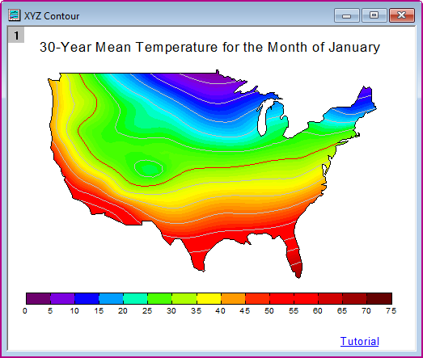
- Wählen Sie Datei: Grafiken exportieren im Origin-Menü, um den Dialog Grafiken exportieren: expGraph zu öffnen.
- Aktivieren Sie das Kontrollkästchen Automatische Vorschau. Das Diagramm wird dann als temporäre Kopie im Bedienfeld auf der rechten Seite des Dialogfelds angezeigt.
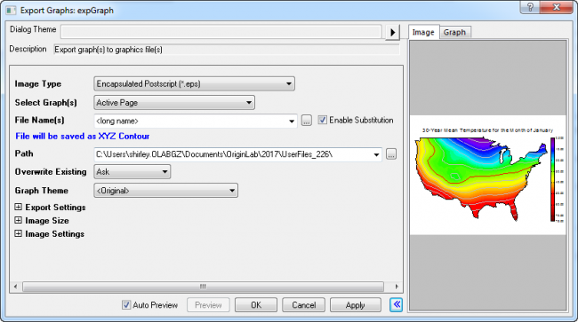
-
 |
Wenn die Registerkarte Bild Ihrer Vorschau leer angezeigt wird, sehen Sie vermutlich nur die Ecke eines sehr großen Rasterbildes. Seit Origin 2019 können Sie mit der rechten Maustaste auf die Registerkarte Bild klicken und einen Zoomlevel für die Vorschau Ihrer Raster- oder Vektorbilder wählen. Durch Bearbeitung der Größe des Vorschaufeldes und des Zoomlevels der Registerkarte Bild können Sie Ihre gesamte Grafik ansehen.
|
- Legen Sie die folgenden Einstellungen fest, um das Diagramm zu exportieren:
- Benennen Sie den Dateinamen in MeinDiagramm um.
- Erweitern Sie den Knoten Exporteinstellungen und wählen Sie Grenze in der Auswahlliste Randeinstellungen und geben Sie 3 im Feld Rahmenstärke anpassen ein.
- Erweitern Sie den Zweig Bildgröße, deaktivieren Sie das Kontrollkästchen Auto bei Breite anpassen und setzen Sie die Breite auf 5.
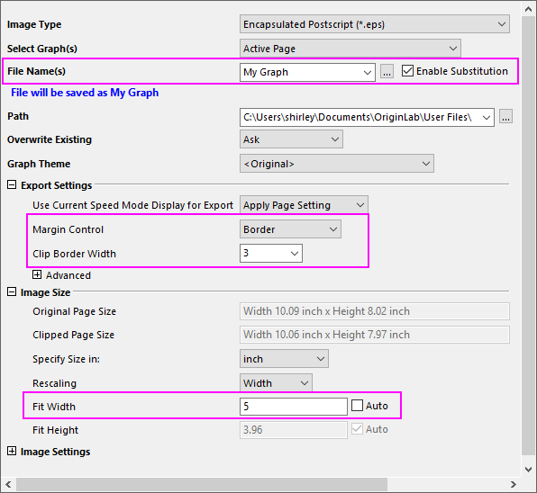
- Klicken Sie auf die dreieckige Schaltfläche rechts neben Dialogdesign. Wählen Sie im Kontextmenü Speichern unter aus. Der Dialog Design speichern unter wird geöffnet.
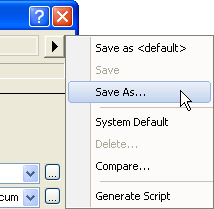
- Geben Sie im Dialog Design speichern unter den Namen Mein EPS-Export als Designname ein. Klicken Sie dann auf OK.
- Klicken Sie auf die Schaltfläche OK im Dialog expGraph. MeinDiagramm.eps wird dann im Anwenderdateiordner erstellt. Der Diagrammpfad wird im Meldungsprotokoll angezeigt.
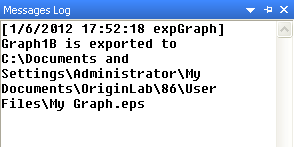
- Wiederholen Sie den Export eines Diagramms mit Hilfe der obenstehenden Einstellungen und wählen Sie das Design Mein EPS-Export direkt im Ausklappmenü des Hilfsmittels zum Grafiken exportieren.
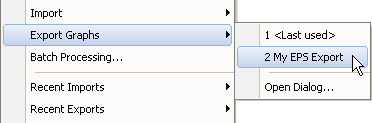
Oder
klicken Sie auf die dreieckige Schaltfläche rechts von dem Dialogdesign im Dialog expGraph. Wählen Sie im Kontextmenü Mein EPS-Export. Die Einstellungen von diesem Design werden dann in den Dialog geladen.
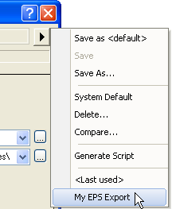
|
Mit den letzten Schritten haben Sie Ihre benutzerdefinierten Exporteinstellungen als eine externe Designdatei gespeichert und gelernt, wie Sie dieses Design über das Ausklappmenü expGraph anwenden. Seit Origin 2021 werden die Exporteinstellungen automatisch mit dem Diagramm beim Export gespeichert. Wenn Sie Ihr Diagramm nicht sofort exportieren, können Sie die Einstellungen speichern, indem Sie auf das Ausklappmenü Dialogdesign klicken und In <Diagramm> speichern wählen.
|
Exportieren Sie die festgelegten Diagramme.
- Öffnen Sie die Beispielprojektdatei Column and Bar.opju im Beispielordner <Origin >\Samples\Graphing.
- Klicken Sie im Projekt Explorer auf den Ordner "Column_Plot_with_Baseline_Y=0.5" und aktivieren Sie das Diagrammfenster darin.
- Wählen Sie Datei: Grafiken exportieren, um den Dialog Grafiken exportieren: expGraph zu öffnen. Wählen Sie hier Portable Network Graphics(*.png) unter Bildtyp.
- Wählen Sie Festgelegt in der Auswahlliste Diagramm(e) auswählen. Klicken Sie auf die Schaltfläche
 rechts vom Bearbeitungsfeld Diagrammseite, um den Dialog Diagrammbrowser zu öffnen.
rechts vom Bearbeitungsfeld Diagrammseite, um den Dialog Diagrammbrowser zu öffnen.
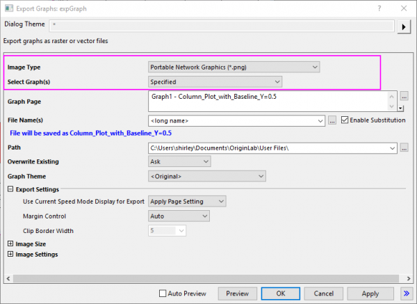
- Im Diagrammbrowser werden alle Diagramme in diesem Projekt im linken Bedienfeld des Dialogs aufgelistet. Wählen Sie Graph8 im linken Feld. Das Vorschaufenster zeigt Ihnen dann eine Vorschau des Diagramms an.
- Klicken Sie auf die Schaltfläche
 , um das ausgewählte Diagramm zu dem rechten Bedienfeld hinzuzufügen, oder klicken Sie alternativ doppelt auf das ausgewählte Diagramm im linken Bedienfeld.
, um das ausgewählte Diagramm zu dem rechten Bedienfeld hinzuzufügen, oder klicken Sie alternativ doppelt auf das ausgewählte Diagramm im linken Bedienfeld.
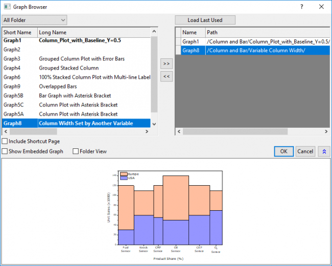
- Klicken Sie dann auf OK. Die festgelegten Diagramme werden im Feld Diagrammseite gezeigt. Erweitern Sie den Knoten Bildgröße und wählen Sie Pixel in der Auswahlliste Angeben der Größe in. Deaktivieren Sie das Kontrollkästchen Auto bei Breite anpassen und setzen Sie die Breite auf 600.
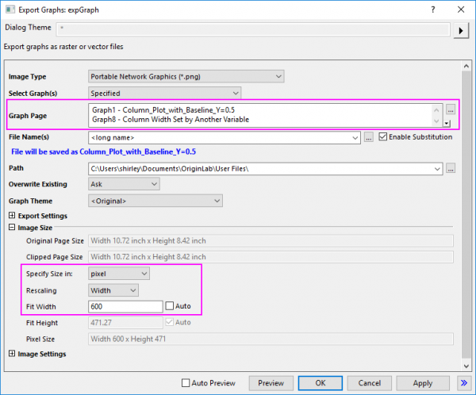
- Klicken Sie im Dialog expGraph auf OK. Es werden zwei Bilder erstellt. Der Diagrammpfad wird im Meldungsprotokoll angezeigt.
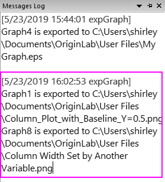